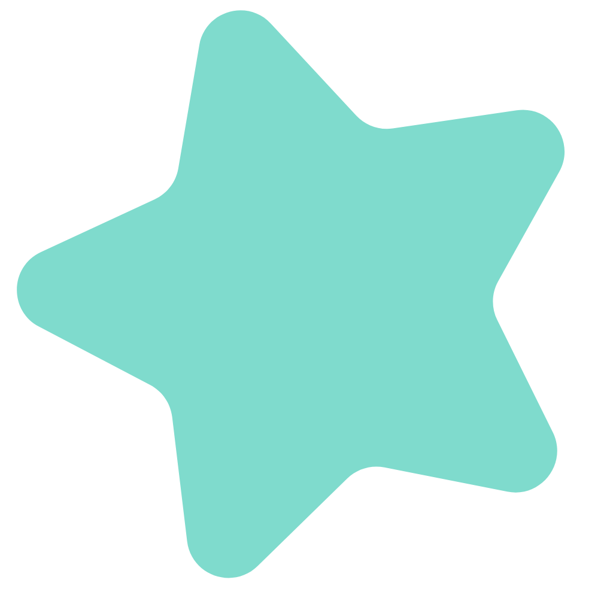
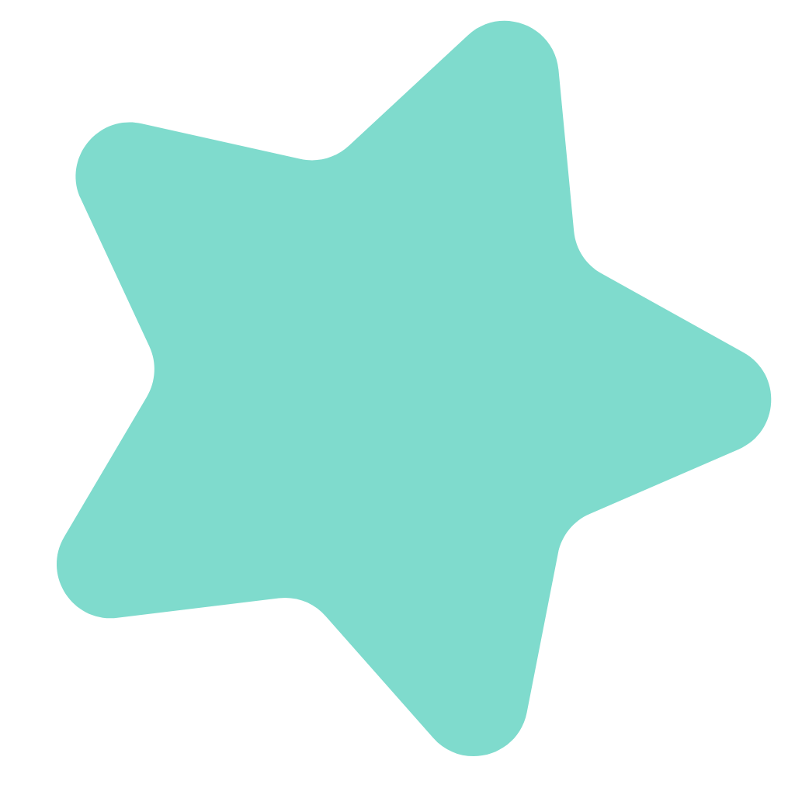

I'm a Bachelor of Industrial Engineering from Bandung Institute of Technology, Indonesia. I have wide range of interest including Product Management, Web Development, and UX Research. Currently, I'm contributing as IT Project Management Officer in a renowned Logistic company.
Up to 1 year transferrable skills in Product Management. On my last project, I conducted an end-to-end design of an Elderly-Friendly Smart Kiosk. I collaborated in a team consisiting of product and app designer, hardware engineer, and software engineer. I determined product metrics for testing and managed to achieve 4/5 satisfaction score. Currently, this product is actively used at Senior Islamic Education Institute in Central Java, Indonesia.
1+ years experience on managing IT project and event project. On my current position as IT Project Management Officer in Logistic ompany, I manage Express Business' IT Projects ranging from daily enhancement to system development project. On daily and weekly basis, I supervise and reported progress and findings of each enhancement and development project, as well as communicate between project stakeholders.
1+ years experience in UX Research. On my last project of designing Elderly-Friendly Smart Kiosk, I was also in charge of the UI/UX design for the application. During that project, I conducted qualitative research through interview and focus group discussion with Elderly, mapping findings with tools such as affinity diagrams, persona, and scenario map. I am also experienced in creating prototypes using Figma and conducting usability testing.
Up to 2 months experience in Web Development. I'm currently expanding my practical skillset in web development. I am quite familiar with basic JavaScript and basic to intermediate HTML and CSS. I aim to hone my skill to become a fullstack web developer.
© Faradissa Eka Putri.